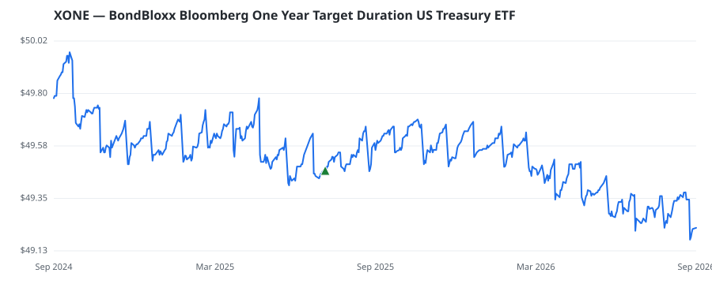

bullish · bearish · n/a — dots: price>SMA10 · SMA10>SMA50 · SMA50>SMA200 · up>down volume (20d)
Capital Goods · unknown cap
Members who bought XONE earned a dollar-weighted -0.5% from their disclosure dates, versus +23.3% for the S&P 500 over the same holding windows (-23.8% alpha).

▲ green = a disclosed purchase · ▼ red = a disclosed sale (plotted on disclosure date)
| Revenue | $59.3M | Net income | $-14.9M |
|---|---|---|---|
| Operating income | $-13.9M | Diluted EPS | $-0.86 |
| Assets | $107.3M | Equity | $76.3M |
| Member | Chamber | Out-performer | Disclosed buys $ | Return on buys |
|---|---|---|---|---|
| Lindsey Graham | senate | — | $32K | -0.5% |
Disclosed $ figures are bracket midpoints — filings report ranges (e.g. $1,001–$15,000), not exact amounts.
| Fund | Fund alpha vs SPY | Position | % of book |
|---|---|---|---|
| DUTCH ASSET Corp | +5% | $0M | 0.2% |
Hedge data: SEC EDGAR 13F · ranked funds beat SPY in >50% of their quarters · fund alpha = mirror-portfolio return minus SPY.